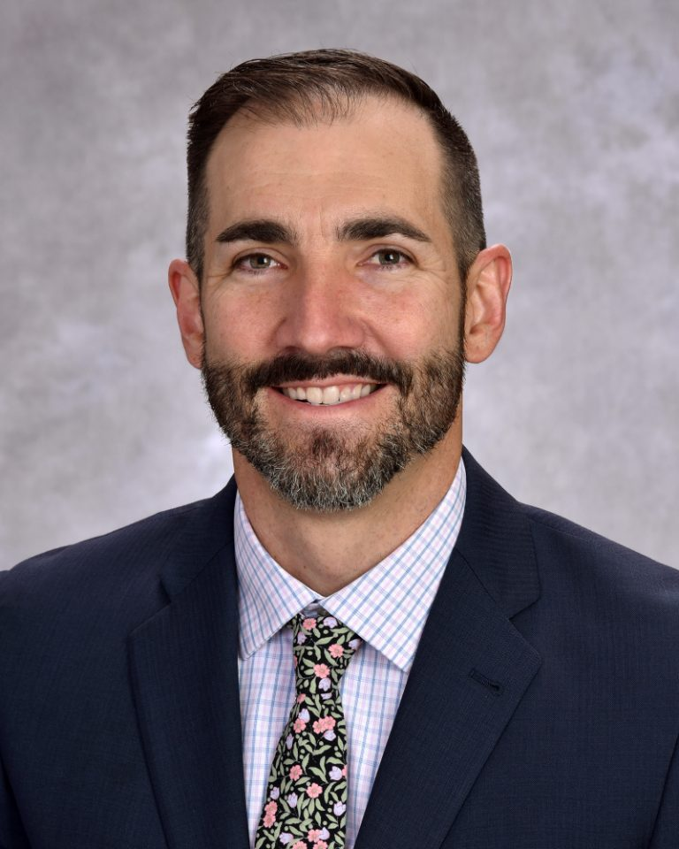

You are trusting me on what might be one of your worst days. It seems fair that you know who I am.

I grew up in Youngstown, Ohio. Family brought me to Arizona, and it did not take long to feel like home. I went to medical school at the University of Arizona in Tucson, headed back to Ohio for my emergency medicine residency at Ohio State, and then came home to Arizona for good.
I started my career at Banner University Medical Center. Today I am the Facility Medical Director at Banner Gateway, which means I still take care of patients, and I also get a say in how our whole department takes care of people.
Anyone. Anything. Anytime. That is the deal in the ED. We do not choose who comes through the door or what they bring with them, and I have never wanted it any other way.
I am also one of the most impatient people you will ever meet. In this job, that turns out to be useful.
I will tell you something doctors do not say out loud very often: there was a stretch when I was exhausted and burned out, and I was getting through shifts more than I was showing up for them.
One night during that stretch, a man came in with his heart stopped. We did everything we could, and we could not save him. I wanted to move on to the next room. Something made me sit down with his family instead.
Through tears, they thanked me. Three years earlier, I had talked their dad into staying for monitoring when he wanted to go home. Because of that, they knew everything that could be done for him had been done. I barely remembered meeting him.
I almost walked right past that conversation. I think about it often. It is why I sit down when I talk with you, and why I try to slow down for a moment even on the busiest shift.
I do not always get it right. Some shifts I run behind, and some days I am not as patient as I want to be. When that happens, it is on me, not on you.
I have been asked "how long is this going to take?" more times than I can count, and I still do not have a great answer. And the coffee machine in the physician lounge is still broken, which explains a lot.
After all these years, I still think medicine is at its best when it feels like teamwork. When you know what to expect and how to tell your story, a hard day gets a little easier, and it helps us take better care of you. That is the whole reason I built this.
Eric Cummins, MD